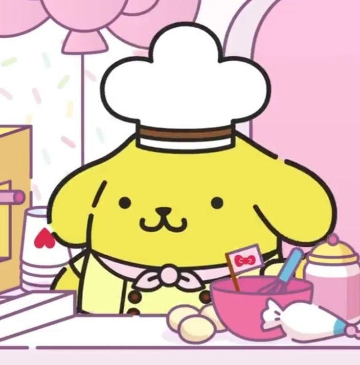

|  |
Pompompurin, karakter yang menggemaskan dari Sanrio, memiliki penampilan kuning cerah dengan bintik-bintik cokelat dan telinga jatuh yang menggemaskan. Dia sering mengenakan topi biru dengan pita merah di tengahnya. Meskipun tidak memiliki kemampuan khusus, Pompompurin terkenal karena kebaikan dan kegembiraannya, selalu membawa keceriaan kepada orang-orang di sekitarnya. Dia adalah karakter yang santai, ramah, dan penuh semangat, suka menjelajahi dunia dan bertemu dengan teman-teman baru. Bersama teman-teman seperti Hello Kitty dan My Melody, mereka sering menjaga satu sama lain dalam petualangan yang menyenangkan. |